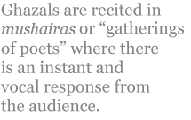

Debjani Chatterjee
Ghazals
An introduction to the Ghazal
The ghazal is an established and extremely popular verse-form in Urdu, primarily
composed for performance rather than for the page. Like many other classical forms
of Urdu poetry, the ghazal’s origin lies in Arabic literature. It was a distinct part of the
qasida, a long oral panegyric poem with narrative elements in classical Arabic from
the pre-Islamic period, but it gradually began to be composed independently of the
qasida. With the Arab conquest of Persia and incursions into India, Arabic forms of
poetry were exported and, although the long qasida with a hundred couplets or more
never gained a strong foothold outside Arab soil, the ghazal as a separate entity
quickly became fashionable. The length of the ghazal varies from about five couplets
to around twenty, although few go beyond thirteen and seven is about average.Once
mastered, this brevity means that the poet can compress a great deal in just a few lines of verse. The ghazal’s potentially wider range of subject matter is another advantage,
although love has generally been the most important theme.
The ghazal is a traditional type of short lyric poem that can be set to music and
this has undoubtedly contributed to its popularity. It can be recited, chanted and sung,
with or without a musical accompaniment. Ghazals are recited in mushairas or
“gatherings of poets” where there is an instant and vocal response from the audience.
This has meant that poets deliver their work in bite-sized couplets, pausing between
stanzas and often repeating their lines for better audience assimilation. Great ghazal
composers like Nasir Kazmi have enjoyed the adulation reserved in the West for pop
stars, thanks not only to the mushaira performances — and a public mushaira can
attract over a thousand listeners — but also to their work being sung by the greatest
singers of the Indian subcontinent. Ghazals are often to be heard on radio and
television; and, as performance poems and songs, they can and do reach many non-literate
listeners. Frequently ghazals have been incorporated into Urdu and Hindi
cinema, and even theatre, thus reaching all classes of people. Popular Indian and
Pakistani cinema has a strong romantic streak and the ghazal is well suited to this
medium.
The word “ghazal” has two literal meanings: “talking to women” and “the cry
of a stricken deer.” Both are very appropriate in conveying the nature of poems that
usually express love for the beloved — both sacred and profane. While the ghazal can
cover any topic, love has always been its pre-eminent subject. Often there are
sentiments such as anguish or melancholy and the mood in a ghazal can shift from
couplet to couplet.
Like the sonnet, the ghazal has strict requirements of structure, content and
imagery, all of which present a special challenge for the translator. It has an
ornamental style, for instance, that does not translate easily for the twenty-first
century reader in English. The ghazal uses a single uniform metre in every line — and
often a very complex metrical pattern is used, as well as a rhyming scheme of AA,
BA, CA, DA, and so on. This could not be duplicated in English translation without
the poem sounding very contrived — even comic — although I consider that translations
into some other Indic languages may well be very much more successful in this
regard. In most Indian languages, as in Urdu, there is an abundance of natural rhymes
and so rhyme can extend with great ease over several syllables. They share also the
same easy facility for internal rhyming. Little wonder then that the ghazal, so popular
in Urdu and Farsi, has also become an important genre of poetry in many North
Indian languages like Punjabi, Gujarati, Marathi and Hindi. In my own mother
tongue, Bengali, I have been delighted to encounter the experimentation with the
ghazal form by “the Rebel Poet” Kazi Nazrul Islam.
Maintaining one rhyme consistently and with fluency throughout a poem is
difficult when composing in English, and this is doubly so when translating. Perhaps
for this reason, many translators in English have changed the ghazal’s couplets to
quatrains, but I consider that couplets are such an essential part of the ghazal that they
should be kept as such.
An interesting feature of the ghazal, one that contributes to its success as a
performance piece in the mushaira, is the ability of each individual couplet to be a
complete and autonomous entity, frequently differing from the adjoining couplets in
theme and mood. Initially this can make the ghazal appear disjointed when read in
English, but there is an overall unity in the shape of the poem, the metre and the
patterning of language and images. In Basir Sultan Kazmi’s “Pledge,” for instance,
the first couplet and then every alternate line has a similar phrase to end it. Themes
can also recur in the same ghazal. The second couplet of “Tomorrow’s Trees”
introduces the concept of a journey and in the last couplet this has become “life’s
journey.”
Another interesting feature of the ghazal is the “signature line” in the final couplet.
In most cases, though not all, the poet introduces his or her own name, or
more usually penname, either in the last or the penultimate line. It is a convention that
I have retained in my translations even though it may take the English reader some
getting used to. The signature line has the effect of drawing in the poem from the
universal to the individual, and from distance in time and space to the here and now. It
is a distinctive feature that can contribute to the enjoyment of the ghazal.
Each couplet of a ghazal is an aphorism, often Gnostic. This is especially so in
the case of the final couplet, which is often the opportunity for some philosophical
musing. This is one of the characteristics of the ghazal that has made individual
couplets eminently quotable. Thus Basir Sultan Kazmi’s “Tomorrow’s Trees” ends:
“those who tread with greatest caution are the ones who stumble.” Such quotable lines
may be found also within the body of the ghazal.
Ghazals abound in such traditional symbols and images as: the teasing — even
cruel — beloved, the moon, the firefly, the rose, the thorn, the garden, the desert, the
caravan, the caged nightingale, the gallows, the candle, the moth, and so on. Many
symbols have Sufi connotations that give the ghazals a mystical interpretation in
which the beloved may be God, the saqi or “cup-bearer” may be a spiritual guide,
while the lover who drinks wine may be the spiritual aspirant who receives divine
wisdom. In a mushaira, the audience will be familiar with such conventions and will
appreciate the depth and richness that they can impart.
[ Extracted from the introduction to Debjani Chatterjee, ed., Generations of Ghazals: Ghazals by Nasir Kazmi and Basir Sultan Kazmi (Bradford: Redbeck Press, 2003). The ghazal translations below are from the same book.]
Finding One’s Place
(Ghazal by Basir Sultan Kazmi; translated from the Urdu by the poet & Debjani Chatterjee)
Everyone settles at last, each in their own place.
No one can stay for long in someone else’s place.
Everyone must find and build a place of their own,
even if it seems they have a ready-made place.
The heart and the glance that were parted for so long,
met again today at an old rendezvous place.
Where all are content in their own respective space -
in my imagination there is such a place.
There is no charm here in living, or in dying.
Who counselled you to inhabit another’s place?
I grumble about you, but there is also love.
There is room for both — each has its distinctive place.
It’s not easy to discover an heir to Qais;
for much too long this has remained a vacant place.
That site of which you have been neglectful, Basir —
that is none other than your own space, your true place.
Passing Through
(Ghazal by Basir Sultan Kazmi; translated from the Urdu by Debjani Chatterjee)
Even if she lives here, I can never hope to meet her.
Wherever she may live, her happiness is my prayer.
O my desolate heart, what a strange wish is this of yours:
to want her to show herself at once cruel and tender.
Paradise has not yet been created on Earth, my friends.
The place of which you speak — know that I too have lived there.
My bags have always been few and my luggage weighed little.
Like a nomad just passing through, I have lived here and there.
Basir, even those unworthy of making the journey,
became leaders of the caravan, leading it nowhere.
Something To Say
(Ghazal by Nasir Kazmi; translated from the Urdu by Debjani Chatterjee)
The mood of these frightened towns has something to say.
Sometimes you too should heed what this earth has to say.
These long glacial nights have some questions to ask;
this silence hinting at sound has something to say.
Everyone is in their own home, deep in slumber.
Far away some cuckoo’s voice has something to say.
When sparrows take turns to twitter in the morning,
some strange and sorrowful voice has something to say.
In the night when the stars take turns to stay awake,
the sounds of many drowned stars have something to say.
Sometimes at dawn, sometimes at dusk, sometimes at night -
always the seasonal wind has something to say.
This town is a guesthouse; we are its visitors.
Addressing guests, the guesthouse has something to say.
O fellow travellers, stay awake, stay awake!
the caravan bell’s ringing has something to say.
Nasir, don’t be careless of these turbulent times.
Something happens when people have something to say.
What Happened To Them?
(Ghazal by Nasir Kazmi; translated from the Urdu by Debjani Chatterjee)
Those who sang by the riverbanks — what happened to them?
Those who sailed their boats — what happened to them?
The sunrise that almost dawned, where is it stranded?
The caravans that were to come — what happened to them?
All night long I await their arrival.
The ones who lit the path — what happened to them?
Who are these people who surround me?
Those who preserved friendship — what happened to them?
Those eyes that pierced the heart — what happened to them?
Those lips that smiled — what happened to them?
The buildings have burnt to cinders.
Those who would rebuild them — what happened to them?
Misery questions the lonely house:
“Those who lit your lamps — what happened to them?”
You and I are but burdens on this earth.
Those who shouldered the earth’s burden — what happened to them?
Naat
(Ghazal by Basir Sultan Kazmi; translated from the Urdu by the poet & Debjani Chatterjee)
The ones who gained light from my Prophet
Always shone like the sun, moon and stars.
Those who followed his path, reached their goal;
Those who did not, stayed fighting kismet.
My empty skirt is an adornment,
For I require alms from just one door.
Decked with dust from the Messenger’s path,
The eye can’t be dazed by gold or gems.
Basir, the Prophet’s praise is a debt
No poet has ever fully met.
Naat (original)
Jinhon ne roshni paaee meray Payamber say
Sadaa chamakte rahay mehr o maah o akhter say
Chalay jo aap ke hamraah paa gaye manzil
Naheen chalay to jhagartay rahay muqadder say
Wagerna mujh ko tahee daamani hi zeba hai
Ke chaahiye mujhe kheraat aik hi der say
Wo aankh jis ka ke surma ho khaak-e raah-e Rasool
Wo ho sakay gi na kheera zer o jawaaher say
Nabi ki madha saraaee wo qerz hai Basir
Adaa huaa na kabhi jo kisi sukhanwer say
A Note on the Naat
by Basir Sultan Kazmi
Naat literally means “an epithet” or “praise”. In Arabic, Persian and Urdu poetry, a naat is a poem that praises the Prophet of Islam, Muhammad (Peace be upon him). Naats may be found also in Punjabi, Hindi, and other languages. Sometimes it is also a kind of invocation at the beginning of a book and immediately follows the hamd or “praise to Allah”. Sometimes just a couplet in a ghazal or a line or stanza in a poem contains words of praise for the Prophet. As thousands of naats have been written over the centuries, it is very difficult to attempt something new or different in praise of the Prophet. Yet every genuine poet tries to avoid clichés and seeks to treat the subject in a way that is fresh.
The implications of my naat are that, for Muslims to shine in this life and in the hereafter, it is not enough to verbally proclaim their belief in the prophet-hood of Muhammad (pbuh) — they need to actually follow his path, and this of course is not an easy task. The light that we receive from the message revealed to the Prophet (i.e. the Quran) can guide us in our day-to-day life. It contains the wisdom to enable us to avoid stumbling blocks in our way. We must also choose this path consciously, using all our knowledge and capabilities. Just being born in a Muslim family may facilitate, but does not guarantee, one’s success in achieving the goal. A Quranic verse clearly states that human beings get nothing more than that for which they have made an effort. Iqbal, the national poet of Pakistan, has said in one of his couplets that it is our actions that make life a heaven or a hell, because human beings in their essence are neither pure nor sinful.
My second couplet’s second line refers to the concept of pre-destination. The belief that nothing can happen without the will of God is sometimes misinterpreted to conclude that whatever happens is allowed by God. According to the Quran, Allah has given human beings the privilege of free will and, by exercising this prerogative, we gain awareness and therefore contribute to our own development. About an eighth of the Quran’s verses invite us to think about the world and about ourselves. In the Quran each verse that gives an instruction or advice to do or not to do something, is followed by a verse that says that if we reflect upon the matter we will see that it is in our own interest to act accordingly. One verse says that when believers listen to a verse of the Quran they do not fall prostrate (in blind obedience). Instead they think and ponder over the verse and, the more they understand its words, the more they believe in its truth. Our common experience tells us that we follow an advice whole-heartedly when we understand the wisdom concealed in it. Thus, the Quran discourages blind faith. That we believe in Allah without having seen Him should not be regarded as having blind faith in Him. Another Quranic verse says that if we ponder, we shall see His signs within us and in the universe around us.
My final couplet expresses an inability to fully appreciate the personality of the Prophet. Ghalib, a great Urdu poet of Mughal times, ended one of his own Persian naats thus:
Ghalib! I have left the praise of the Prophet to the Omnipotent One
As only that Pure Being knows the worth of Muhammad.
Translator’s note by Debjani Chatterjee
Urdu ghazals are said to be notoriously difficult to translate. If this is so, then this naat too offers the same difficulty, for Basir Sultan Kazmi has used the form of the ghazal to render his praise-poem to the Prophet.
Urdu uses the Arabic script, which I cannot read but, in translating Basir’s naat, I had the benefit of both his literal translation in English as well as the opportunity to hear him recite it in the original language. Since Urdu is so close to one of my languages, Hindi, I can understand and appreciate his naat on listening to it. But translating a poem in this special form posed distinct problems. I have translated many of Basir’s ghazals in the past and, from among the many technical characteristics of the ghazal, I have frequently had to sacrifice certain features in order to convey the meaning. Retaining the poem’s meaning and mood has always been my first priority. In the case of this naat too, I have been able to keep only a surface resemblance to its form.
Unable to follow the strict metrical pattern of the original Urdu, I effected the compromise of retaining a strict uniform syllable count in English. I have kept the couplets of the original poem, but was sorry to have to sacrifice the refrain at the end of the first two lines and each couplet after them. Basir’s refrain, ‘say’, the Urdu and Hindi word for ‘by’ and ‘from’ is hardly a word that can be kept at the end of an English sentence. Many of Basir’s second lines contain an internal rhyme with the refrain ‘say’. This too was impossible to keep without forfeiting the meaning of the poem. The compromise I offer is to end the naat with a rhyming couplet. This enhances the special quality of these final lines which are also the poet’s ‘signature’ couplet and a signal to the reader-listener that the naat is coming to an end. The rhyming words ‘debt’ and ‘met’ are also echoed by the words ‘prophet’ and ‘kismet’ in the first and second couplets.
In Urdu there are no capital letters, but my reason for using capitals at the start of each line in English is that the form is quite a traditional one and Basir’s naat follows traditional conventions in Urdu. His language too is conventional and elevated, with the mood being a traditional one of veneration for the Prophet Muhammad. I hope that capitalising the start of each line in English will convey something of this sense of maintaining an old form.
As far as the naat’s meaning is concerned, I feel much happier about the result in English. The most difficult couplets to translate were the third and the fourth. Basir’s literal translation of the third couplet was:
Otherwise, the emptiness of my skirt is its embellishment/adornment
As I need alms from only one door.
The “emptiness of my skirt” is an expression that is readily understood by the Urdu reader-listener to convey poverty, but is not an expression that an English audience would understand. In an early draft I considered translating the expression as “my poverty”, but this seemed too bald and lacking in the beauty of the original imagery. Because of the reference to “alms” in the couplet’s second line, I eventually convinced myself that the English reader would work out the implication of the skirt’s emptiness and realise that the narrator is calling himself a beggar for whom poverty is an embellishment as he goes begging for alms to just one door. The discerning reader will know that it is the charity of spiritual wealth that is begged and also that “the one door” refers to the Prophet Muhammad.
The fourth couplet was the most difficult. Basir’s literal translation was:
The eye that has, as collyrium, the dust of the Prophet’s path
Cannot be dazzled by gold and jewels
In his literal translation Basir uses the word “Prophet” although the original word in his naat is “Rasool”, the Arabic term for “Messenger”. The naat’s reader-listener would of course understand that the Prophet Muhammad was meant. Although my penultimate draft had “Adorned with dust from the Prophet’s path”, which I quite liked, I decided to try to retain the word “Messenger” because it seems to add to the picture that is sketched of the Prophet, and the word “Prophet” (“Nabi” in the source language) has already been used in the naat’s opening and closing couplets. Basir had correctly translated the word “surma” as “collyrium”, but I felt that neither “surma” nor “collyrium” would be understood by many English readers today. After some reflection on including the word “surma” with a footnote, I took a tough decision to omit the word altogether but yet convey the meaning of the line by mentioning the adorning of the eye. In this lovely couplet the dust from the road walked by the Prophet of Islam is compared to the surma that adorns a person’s eyes, and, although dust in the eyes would normally be considered to obscure the vision, in this case the holy dust clears the narrator’s spiritual vision so that it is left unaffected by the glitter of materialism. In my translation I had to shift “the eye” to the second line, the only instance where my version of the poem could not be a line-by-line translation.
[The naat and Basir Sultan Kazmi’s and Debjani Chatterjee’s articles on it were previously published in a pamphlet entitled Is a Religious Poem Possible in the Early 21st Century? edited by David Hart and published by Flarestack Publishing, Birmingham, 2004.]
An Indian Summer
(A ghazal by Debjani Chatterjee)
September — and I see the urban fisherfolk
dreaming of salmon leaping in roaring rivers.
Sunday in Sheffield — and I walk by the canal.
The high Himalayas drum with roaring rivers.
The dragonfly flits in the Yorkshire afternoon
while Mandakini descends in roaring waters.
Once a laughing goddess roamed along these banks;
now unknown, her name resounds through roaring waters.
Ducks swim, ruffling their feathers over this landscape.
Yards away, industry storms its roaring waters.
Whatever she is called, Ganga meditates
on Summer rippling the calm of English rivers.
Note: Mandakini is the name of the River Ganges or Ganga when she flows through Heaven. Like the Ganges, many English rivers too, including those in Sheffield, were worshipped as goddesses in pre-Christian times.
“An Indian Summer” was first published in Namaskar: New & Selected Poems by Debjani Chatterjee (Redbeck Press, Bradford, 2004).
Nasir Kazmi was born in Ambala in British India in 1925 and died in Lahore in 1972. In 1947 when India was partitioned, Nasir became a muhajir or refugee in Pakistan. He soon became famous as a poet of migration. His first poetry collection Burg-e-Nai or ‘Bamboo Leaf’ was published in 1952. His posthumous collection, Diwan, won the Adamjee Prize. Nasir Kazmi’s elegant ghazals, filled with yearning and pathos, established him as one of the finest ghazal writers of post-independence Pakistan and India.
Basir Sultan Kazmi is a British Pakistani poet, teacher, playwright and director. He is a founder-member of Carvan-e-Adab UK and Mini Mushaira, and has awards for writing. His books include Moj-e-Khayal (poetry), Bisaat (Urdu drama) and in translation The Chess Board and, jointly with Debjani Chatterjee and Simon Fletcher, A Little Bridge. Many of his ghazals have been translated jointly with Debjani Chatterjee and are published in her Generations of Ghazals: Ghazals by Nasir Kazmi & Basir Sultan Kazmi (Redbeck Press, Bradford, 2003). Basir has edited a number of posthumous works by his famous father, Nasir Kazmi. Further information from http://MiniMushaira.mysite.wanadoo-members.co.uk.
Debjani Chatterjee is a British Indian award-winning poet, translator and children’s writer. She is a Royal Literary Fund Fellow, Patron of Survivors’ Poetry and Associate Editor of Tadeeb International and Pratibha India. She has chaired the National Association of Writers in Education and the Arts Council of England Translations Committee. Her many books include: Namaskar: New & Selected Poems and Masala: Poems from India, Bangladesh, Pakistan & Sri Lanka. Her many awards include an MBE for services to Literature, Sheffield Hallam University’s honorary doctorate and the Nasir Kazmi Society in Lahore’s Honorary Life Membership. Further information from http://DebjaniChatterjee.mysite.wanadoo-members.co.uk.
|